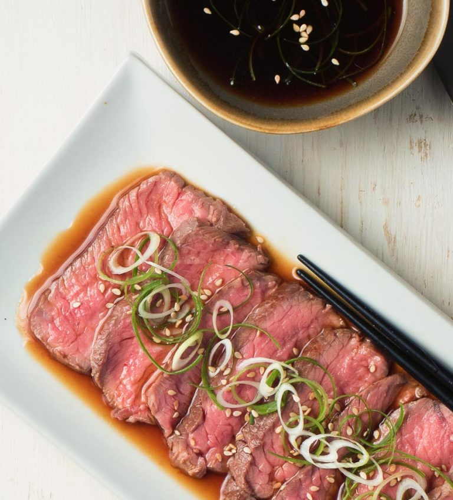

Beef tataki is beef cooked perfectly rare with a simple sauce

Ingredients
12-14 oz good quality top sirloin
salt
pepper
2-3 green onions
1 1/2 Tbsp sake
2 tsp mirin
12 Tbsp rice wine vinegar
11/4 cup soy sauce
2 Tbsp water
2 Tbsp fresh lemon juice
Preparation
Sous vide the steak and cook the steaks
Salt the steaks liberally.
Use a food saver to shrink wrap the steaks.
Pre-heat your sous vide to 116 degrees. See
below for guidelines on temperature vs. level of doneness.
Immerse the shrink wrapped steaks
in the water and let it cook for about 90-110 minutes.
Remove the steaks from the water bath
Heat a sturdy skillet large enough to
hold the steak in a single layer over medium high heat.
Add about 1 Tbsp of vegetable or peanut oil.
Sprinkle the steaks with black pepper to taste. A nice crust of butcher's grind pepper is nice.
Sear the steaks one one side for about 20 seconds.
Flip and cook on the other side for 20 seconds.
Repeat on each side for a total of about 80 seconds.
Sear the sides (stand the steaks up) about 20 seconds on each of the long sides.
Let rest 5 minutes.
Make the ponzu sauc
Combine the sake and mirin in a small
sauce pan and simmer for 1 minute.
Add the remaining ingredients and stir.
Prep the green onions
Here's a trick that food bloggers don't a
dvertise. If you want those nifty curled green onions it's easy
Julienne the green part of a couple green onions.
Immerse the julienned green onion in
a small bowl of ice and water.
Stir them around a bit with your finger to get them
unstuck from each other.
Let stand about 20 minutes.
Drain and blot on paper towel.
Serve the beef tataki
Slice the beef thinly. Try to get as close to
across the grain as you can. If you have
a nice Japanese knife this is a good place to use it
Fan the beef out. Garnish with thin slices of
the white portion of a green onion along
with the curled green onion.